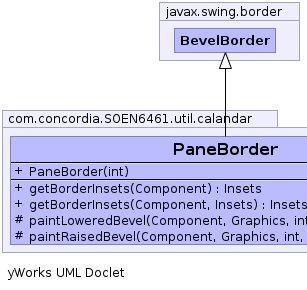
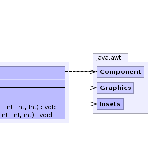

public class PaneBorder
extends javax.swing.border.BevelBorder
Warning: Serialized objects of this class will not be compatible with future Swing releases. The current serialization support is appropriate for short term storage or RMI between applications running the same version of Swing. A future release of Swing will provide support for long term persistence.
|  |  |
| Constructor and Description |
|---|
PaneBorder(int bevelType)
Creates a bevel border with the specified type and whose
colors will be derived from the background color of the
component passed into the paintBorder method.
|
| Modifier and Type | Method and Description |
|---|---|
java.awt.Insets |
getBorderInsets(java.awt.Component c)
Returns the insets of the border.
|
java.awt.Insets |
getBorderInsets(java.awt.Component c,
java.awt.Insets insets)
Reinitialize the insets parameter with this Border's current Insets.
|
protected void |
paintLoweredBevel(java.awt.Component c,
java.awt.Graphics g,
int x,
int y,
int width,
int height) |
protected void |
paintRaisedBevel(java.awt.Component c,
java.awt.Graphics g,
int x,
int y,
int width,
int height) |
getBevelType, getHighlightInnerColor, getHighlightInnerColor, getHighlightOuterColor, getHighlightOuterColor, getShadowInnerColor, getShadowInnerColor, getShadowOuterColor, getShadowOuterColor, isBorderOpaque, paintBorderpublic PaneBorder(int bevelType)
bevelType - the type of bevel for the borderpublic java.awt.Insets getBorderInsets(java.awt.Component c)
getBorderInsets in interface javax.swing.border.BordergetBorderInsets in class javax.swing.border.AbstractBorderc - the component for which this border insets value appliespublic java.awt.Insets getBorderInsets(java.awt.Component c,
java.awt.Insets insets)
getBorderInsets in class javax.swing.border.BevelBorderc - the component for which this border insets value appliesinsets - the object to be reinitializedprotected void paintRaisedBevel(java.awt.Component c,
java.awt.Graphics g,
int x,
int y,
int width,
int height)
paintRaisedBevel in class javax.swing.border.BevelBorderprotected void paintLoweredBevel(java.awt.Component c,
java.awt.Graphics g,
int x,
int y,
int width,
int height)
paintLoweredBevel in class javax.swing.border.BevelBorder